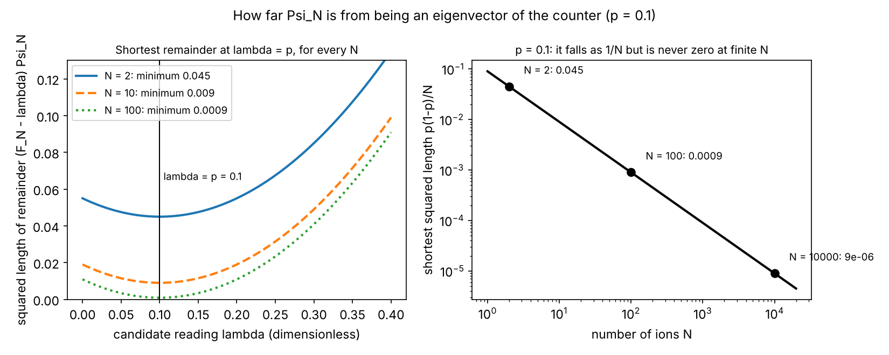
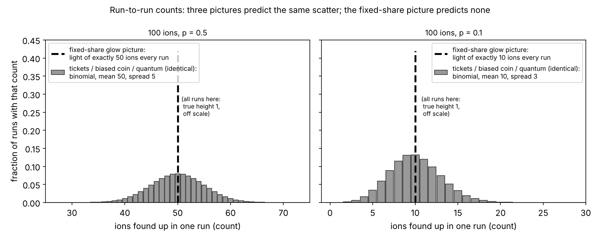
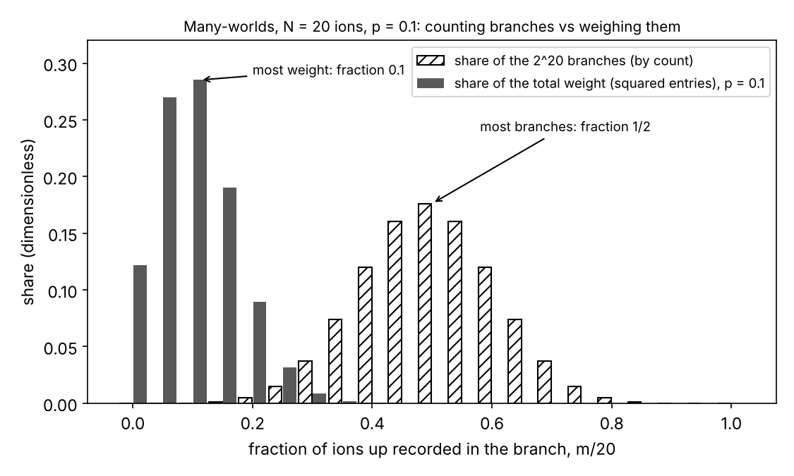
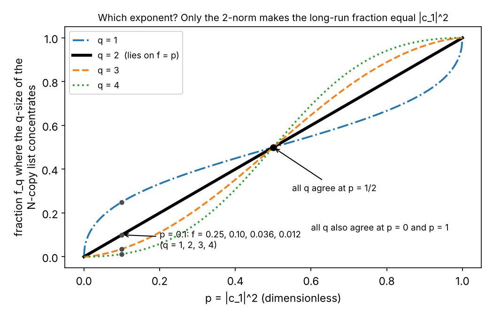

Prepare a hundred trapped ions, each in the same half-and-half superposition of two levels, and look: about fifty glow, but not exactly fifty. Repeat the run and the number scatters by about five; make the preparation all-up or all-down and the scatter disappears, apart from the imperfections of preparation and readout. (A hundred is my illustration; the 1993 measurement that found this scatter, and named it quantum projection noise, used a single mercury ion read out again and again and groups of beryllium ions of various sizes.) That scatter is the finite-$N$ face of the frequency-operator argument, which asks what the $N$-ion state itself says about the counter that reads the glowing fraction.
The argument in four short steps, with numbers you can check on a calculator. The list. Write the $N$-ion state as a list with one entry per string of ups and downs. The counter. The counter that reads the fraction of ups is a matrix that multiplies each entry by its string's fraction $m/N$; the one rule about outcomes the argument keeps is that a list the counter merely rescales (an eigenvector) gives its scaling number (its eigenvalue) with certainty. The shortest remainder. For a share $p = |c_1|^2$ strictly between 0 and 1 the prepared list is not an eigenvector at any finite $N$. But the remainder $(F_N - \lambda)\Psi_N$, which would be the zero list if the list were an eigenvector with eigenvalue $\lambda$, has squared length $(\lambda - p)^2 + p(1-p)/N$, shortest at $\lambda = p$, and that shortest value, $p(1-p)/N$, goes to zero as $N$ grows ($p = 0.1$: $0.045$ at $N = 2$, $0.0009$ at $N = 100$, $0.000009$ at $N = 10^4$). Certainty in the limit. In the infinite-copy construction the remainder is gone, the list is an eigenvector with eigenvalue $p$, and the certainty rule makes the long-run frequency $|c_1|^2$, with the exponent 2 inherited from the squared length. No probability rule is written in as such; whether the squared length is one in disguise is a live dispute, and Model 1 below says exactly what is assumed and what the critics say. The short version: read with the certainty rule and the squared length, the formalism can assign long-run frequencies to only one exponent, 2; it does not show that lengths are chances.

The experiments. (1) Quantum projection noise (Itano et al., 1993). The pieces, in one pass. A trapped ion is a single charged atom held in vacuum by electric fields (plus a magnetic field in a Penning trap), where it can be kept for hours; the experiment used a single mercury ion ($^{199}$Hg$^+$) in a radio-frequency trap and groups of beryllium ions ($^{9}$Be$^+$) in a Penning trap. Two internal energy levels of the ion are chosen; I call them down and up. Every ion is first put into down by optical pumping (a laser keeps moving ions out of every level but that one, so they all collect there). A pulse of radio-frequency or microwave radiation at the frequency of the down–up transition then drives each ion partly toward up. I state, without deriving it here, what the standard calculation gives for the ideal case (exactly on resonance, nothing disturbing the ion): after a pulse of length $t$ the ion's amplitude for up has size $\sin(\Omega t/2)$ and for down $\cos(\Omega t/2)$, where $\Omega$, the Rabi frequency, is set by the field strength. So the pulse's length, or how far it is tuned from the transition, sets a share $p$ anywhere between 0 and 1. Then the fluorescence readout: a laser tuned from one of the two levels to a short-lived third level makes an ion in that level scatter light at a high steady rate, of which the detectors catch typically thousands of photons per second, while an ion in the other level scatters almost none; each ion shows itself as bright or dark. Which level is the bright one is the experimenter's choice; below I count ions found up and let "glowing" stand for "found up", since counting bright ions and counting dark ions give the same statistics (one count is $N$ minus the other). For a group of ions the number found up is inferred from the total light, which adds photon-counting noise; Itano et al. measured that noise separately and subtracted it.
What is observed: with every setting held fixed, the number of ions found up changes from run to run. The scatter falls to zero at $p = 0$ and $p = 1$ (all dark, or all bright, every time, apart from the small errors of preparation and readout) and is largest at $p = \tfrac12$; its variance (the average of the squared deviation from the mean) matches $Np(1-p)$ within the measurement uncertainties, for the group sizes used. For 100 ions, my illustration throughout, that is 25 at $p = \tfrac12$, a standard deviation (the square root of the variance) of 5 ions, and 9 at $p = 0.1$, a standard deviation of 3. The single mercury ion, prepared and read out again and again, gives the same statistics one ion at a time: the number of "up" results in a block of $M$ runs has variance $Mp(1-p)$. Idealizations behind every number below: every ion gets the same pulse (ions at different places in a group see slightly different fields; a fixed spread of shares across the ions lowers the scatter a little, while field noise that changes from run to run would raise it), the readout never misidentifies an ion, the ions do not disturb one another's internal state, and the photon-counting noise has been removed.
(2) Rabi flopping in a single ion. Vary the pulse length $t$; at each $t$ repeat prepare-and-read a few hundred to a few thousand times and plot the fraction of runs in which the ion is found up. The points trace $\sin^2(\Omega t/2)$ (ideal case; real curves show reduced and slowly decaying contrast), with error bars of size $\sqrt{p(1-p)/M}$ for $M$ repetitions, the spread of (1) again. So $p$ is a smooth, dialled-in function of the pulse, and that function is the square of the ideal up-amplitude $\sin(\Omega t/2)$. (Curves of this kind are collected in the review by Leibfried et al. 2003; Meekhof et al. 1996 show related Rabi flopping, of a single beryllium ion's motion, with several frequencies mixed in.)
(3) The original two-outcome sorter. Gerlach and Stern (1922) sent silver atoms through a strongly non-uniform magnetic field and found them landing in two separated bands, not the continuous smear that classical magnets pointing every which way would give; the ion's two levels play the part of the two bands, and the textbook "spin sorter" is this device idealized as lossless.
![Run-to-run spread (standard deviation) of the fraction found up, sqrt(p(1−p)/N), against the share p, for N = 10, 100 and 1000 ions; the curves are the binomial formula, not data. Notice: zero at both certainty ends p = 0 and p = 1, largest at p = 1/2 (0.158, 0.050, 0.0158), shrinking as 1/sqrt(N); for 100 ions the count spread is 100 times the fraction spread, 5 ions at p = 1/2 and 3 ions at p = 0.1. The flat grey line at zero is the fixed-share glow picture, which predicts no projection noise. Itano et al. matched this formula for the ion numbers they used.](figures/b-projection-noise.png)
Sources: Itano et al., Phys. Rev. A 47, 3554 (1993), "Quantum projection noise: population fluctuations in two-level systems"; Wineland et al., J. Res. Natl. Inst. Stand. Technol. 103, 259 (1998), on state preparation, readout and projection noise in trapped ions; Leibfried, Blatt, Monroe & Wineland, Rev. Mod. Phys. 75, 281 (2003); Meekhof et al., Phys. Rev. Lett. 76, 1796 (1996); Foot, Atomic Physics (2005), ch. 7 (Rabi oscillations) and ch. 12 "Ion traps" (traps and the bright/dark readout); Gerlach & Stern, Z. Phys. 9, 349 (1922); Sakurai & Napolitano, Modern Quantum Mechanics, 3rd ed., §1.1 "The Stern–Gerlach Experiment"; Feynman, Leighton & Sands, The Feynman Lectures on Physics, Vol. III, ch. 5, §5-1 (Stern–Gerlach filters); Griffiths & Schroeter, Introduction to Quantum Mechanics, 3rd ed., §1.3 "Probability" (mean, variance, standard deviation).
What this rules out. Three pictures, against observation (1):
| picture | 100 ions, $p = \tfrac12$: mean found up, run-to-run spread | $p = 0.1$ | $p = 1$ | says why $p = \sin^2(\Omega t/2)$? | status |
|---|---|---|---|---|---|
| each ion partly in each level, glowing a fixed share | total light of 50 bright ions, every ion half-bright; spread 0 beyond photon noise | 10, 0 | 100, 0 | no | killed by (1): ions are bright or dark, and the count scatters by 5 and by 3 |
| tickets: each ion leaves the pulse with a pre-set answer, a share $p$ of them "up" | 50, 5 | 10, 3 | 100, 0 | no | fits every count here; local versions ruled out by Bell tests on pairs, nonlocal ones not |
| a coin with bias $p$, $p$ supplied from outside | 50, 5 | 10, 3 | 100, 0 | no | fits every count; the template |
| observed | 50, 5 | 10, 3 | 100, 0 | the question |
Each ion partly in each level, glowing a fixed share. The classical picture of what the pulse does: it puts each ion into an intermediate condition in which it scatters light at a fraction $p$ of the full rate. Then $N$ ions glow at $Np$ times the single-ion rate, run after run, with no scatter beyond the photon-counting noise, and at intermediate $p$ no ion is ever seen fully dark or fully bright. Observed: each ion is bright or dark, and the count scatters with variance $Np(1-p)$. Killed by (1). Tickets. Each ion leaves the pulse already carrying its answer, up or down, with a share $p$ of ups: this reproduces the mean and the scatter exactly, since it is a coin with bias $p$, so counts alone cannot rule it out (for a single two-level system, hidden-answer models can be tuned to any table of counts). Local versions, in which each ion's answer is fixed on its own and unaffected by what is done far away, are ruled out by Bell tests on pairs, under the usual assumptions; nonlocal ones, such as the pilot-wave theory in Model 3, are not. What no ticket picture does is say why the share is $\sin^2(\Omega t/2)$. A coin with bias $p$, nothing more. Ordinary probability with $p$ supplied from outside is consistent with every count here and silent on where $p$ comes from. It is the template the quantum argument copies, and the thing it tries to improve on by reading $p$ off the state.

Sources: Feynman, Leighton & Sands, Vol. I, ch. 6 "Probability", §6-2 "Fluctuations" (the coin's binomial spread); Griffiths & Schroeter, 3rd ed., §1.3; Bell, Rev. Mod. Phys. 38, 447 (1966) (a hidden-answer model exists for a single spin) and Physics 1, 195 (1964) (none that is local for pairs).
Model 1: the counter is an observable (Finkelstein 1963; Hartle 1968; Farhi, Goldstone and Gutmann 1989). Intuition. Treat "the fraction of ions found up" as an observable in its own right, with its own matrix, exactly like energy or spin. Ask of the $N$-ion state the one question the formalism answers without any probability rule: is this a state in which that observable has a definite value? For all-down and all-up, yes. For anything in between, no, at any finite $N$; but the part of the state that disagrees with the value $|c_1|^2$ shrinks to nothing as $N$ grows, and in the infinite-copy construction it is gone.
Start from certainty. In (1), at $p = 0$ and $p = 1$ there is no scatter: the counter's reading is certain, 0 or 1. The formalism has one statement about certainty, and it is the only statement about outcomes this model allows itself. A matrix acts on a list of numbers and returns a list; a diagonal matrix multiplies each entry by a fixed number of its own; a list that a matrix merely rescales, $A v = a\,v$, is an eigenvector of $A$ with eigenvalue $a$. The certainty rule (the eigenvalue–eigenstate link): if the state is an eigenvector of an observable's matrix with eigenvalue $a$, then measuring that observable gives $a$ with certainty. About states that are not eigenvectors it says nothing.
One ion. The state is the pair $(c_0, c_1)$, $c_0$ for down and $c_1$ for up, with $c_0^2 + c_1^2 = 1$. I take both real and non-negative, which loses nothing here because only their squared sizes will enter (for complex amplitudes read $|c|^2$ wherever $c^2$ appears). Write $p = c_1^2$. The "is it up?" matrix is $P = \begin{pmatrix}0&0\\0&1\end{pmatrix}$, so $P(c_0, c_1) = (0, c_1)$. Its eigenvectors are $(1,0)$, eigenvalue 0, down for sure, and $(0,1)$, eigenvalue 1, up for sure; and $P\cdot P = P$, since $0\cdot0 = 0$ and $1\cdot1 = 1$. For $0 < p < 1$ the state is neither, and the certainty rule is silent.
$N$ ions. The $N$-ion state is a list $\Psi_N$ with $2^N$ entries, one per string $s$ of $N$ symbols, each 0 (down) or 1 (up). The product rule, an assumption I name because the whole argument rests on it: for independently prepared ions, the entry for a string is the product of each ion's amplitude for its own symbol. With $m(s)$ the number of 1s in $s$, $$\Psi_N(s) = c_0^{\,N - m(s)}\,c_1^{\,m(s)} .$$ For $N = 2$, with the strings in the order 00, 01, 10, 11: $\Psi_2 = (c_0c_0,\ c_0c_1,\ c_1c_0,\ c_1c_1)$. The squared length of a list is the sum of the squares of its entries. Group the strings by $m$: there are $C(N,m) = N!/(m!\,(N-m)!)$ strings with $m$ ones (the binomial coefficient; for $N = 4$ the five values are $1, 4, 6, 4, 1$), each with squared entry $p^m(1-p)^{N-m}$, so the squared length of the part of $\Psi_N$ on strings with $m$ ones is $$w_m = C(N,m)\,p^m(1-p)^{N-m},\qquad \sum_{m=0}^{N} w_m = \big(p + (1-p)\big)^N = 1$$ by the binomial theorem, which uses $c_0^2 + c_1^2 = 1$. (For $N = 2$: $(1-p)^2 + 2p(1-p) + p^2 = 1$.)
The counter. The "is ion $k$ up?" matrix $P^{(k)}$ acts on the $N$-ion list by multiplying the entry of $s$ by 1 if $s$ has a 1 in position $k$ and by 0 if not. The frequency operator, the counter, is their average, $$F_N = \frac{1}{N}\big(P^{(1)} + P^{(2)} + \cdots + P^{(N)}\big),$$ which multiplies the entry of $s$ by $m(s)/N$, the fraction of ups in that string, because adding "is ion $k$ up?" over all $k$ counts the ones. For $N = 2$, in the order 00, 01, 10, 11, $P^{(1)}$ has diagonal $(0,0,1,1)$ and $P^{(2)}$ has diagonal $(0,1,0,1)$, so $$F_2 = \begin{pmatrix}0&0&0&0\\0&\tfrac12&0&0\\0&0&\tfrac12&0\\0&0&0&1\end{pmatrix}.$$ Its eigenvalues, the possible readings, are $0, \tfrac1N, \tfrac2N, \ldots, 1$; its eigenvectors are the lists whose nonzero entries all sit on strings with one and the same $m$. Two things to see at once. The share $p$ need not be a possible reading: for $N = 4$ the readings are $0, \tfrac14, \tfrac12, \tfrac34, 1$, and $p = 0.1$ is not among them. And for $0 < p < 1$ every entry of $\Psi_N$ is nonzero, so $\Psi_N$ has a piece at every reading and is not an eigenvector of $F_N$: not at $N = 4$, not at $N = 10^6$, not at any finite $N$ (the figure shows the pieces for $N = 4$). The certainty rule therefore says nothing at all about the fraction at finite $N$. That silence is the finite-$N$ gap the critics press on; the model's answer to it is the limit.
![The four-ion list Ψ_4 split by the counter's reading, for p = 1/2 (left) and p = 0.1 (right). Each bar's height is w_m, the squared length of the piece of the list on strings with m ions up, built from C(4,m) = 1, 4, 6, 4, 1 blocks, one per string; in each panel the heights total 1. The dashed line marks p and the bracket the spread sqrt(p(1−p)/4): 0.25 on the left, 0.15 on the right. Notice: at p = 0.1 no bar sits at 0.1, because the readings are the multiples of 1/4; and every bar in the right panel is nonzero (0.0036 at 3/4 and 0.0001 at 1, too small to see), so the list has a piece at every reading and is not an eigenvector.](figures/b-counter-readings.png)
How far from an eigenvector? Pick a candidate reading $\lambda$ and form the remainder $R_\lambda = (F_N - \lambda)\Psi_N$, the list with entries $\big(m(s)/N - \lambda\big)\Psi_N(s)$; it would be the zero list if $\Psi_N$ were an eigenvector with eigenvalue $\lambda$. Its squared length is $$\|R_\lambda\|^2 = \sum_s \Psi_N(s)^2\Big(\frac{m(s)}{N} - \lambda\Big)^2 = \sum_s \Psi_N(s)^2\Big(\frac{m(s)}{N}\Big)^2 - 2\lambda\sum_s \Psi_N(s)^2\,\frac{m(s)}{N} + \lambda^2\sum_s \Psi_N(s)^2 .$$ For a diagonal matrix $A$ with entries $A(s)$ write $\langle A\rangle = \sum_s \Psi_N(s)^2 A(s)$: the entries of $A$ averaged with the squared entries of the list as the weights. This is arithmetic about the list; the Born reading in Model 2 will call it the expected reading, but nothing here needs that. Then $$\|R_\lambda\|^2 = \langle F_N^2\rangle - 2\lambda\langle F_N\rangle + \lambda^2 .$$ Two averages to compute. $\langle P^{(k)}\rangle$ is the sum of $\Psi_N(s)^2$ over the strings with a 1 in position $k$; since $\Psi_N(s)^2$ is a product of one factor, $c_0^2$ or $c_1^2$, per ion, fixing ion $k$ at 1 and summing over everything the other ions can do gives $c_1^2\,(c_0^2 + c_1^2)^{N-1} = p\cdot 1 = p$. (For $N = 2$ and $k = 1$: the strings 10 and 11 give $c_1^2c_0^2 + c_1^2c_1^2 = c_1^2(c_0^2 + c_1^2) = p$.) In the same way $\langle P^{(j)}P^{(k)}\rangle$ for $j \ne k$ fixes two ions at 1 and gives $p^2$, while $P^{(k)}P^{(k)} = P^{(k)}$ gives $\langle P^{(k)}P^{(k)}\rangle = p$. So $$\langle F_N\rangle = \frac1N\sum_{k=1}^{N}\langle P^{(k)}\rangle = \frac{Np}{N} = p ,$$ and $F_N^2 = \frac{1}{N^2}\sum_j\sum_k P^{(j)}P^{(k)}$ has $N^2$ terms, $N$ of them with $j = k$ and $N(N-1)$ with $j \ne k$: $$\langle F_N^2\rangle = \frac{1}{N^2}\big(N\,p + N(N-1)\,p^2\big) = \frac{p}{N} + p^2 - \frac{p^2}{N} = p^2 + \frac{p(1-p)}{N} .$$ Therefore $$\|R_\lambda\|^2 = p^2 + \frac{p(1-p)}{N} - 2\lambda p + \lambda^2 = (\lambda - p)^2 + \frac{p(1-p)}{N} :$$ shortest at $\lambda = p = c_1^2$, and the shortest squared length is $p(1-p)/N$. Check it by hand at $N = 2$, $p = 0.1$, so $c_0 = \sqrt{0.9} = 0.9487$, $c_1 = \sqrt{0.1} = 0.3162$, $\Psi_2 = (0.9,\ 0.3,\ 0.3,\ 0.1)$ (squared entries $0.81, 0.09, 0.09, 0.01$, total 1) and readings $(0, \tfrac12, \tfrac12, 1)$:
| $\lambda$ | remainder $R_\lambda$, entries for 00, 01, 10, 11 | squared length, added up | formula $(\lambda - 0.1)^2 + 0.045$ |
|---|---|---|---|
| 0 | $(0,\ 0.15,\ 0.15,\ 0.10)$ | $0 + 0.0225 + 0.0225 + 0.01 = 0.055$ | $0.055$ |
| 0.1 | $(-0.09,\ 0.12,\ 0.12,\ 0.09)$ | $0.0081 + 0.0144 + 0.0144 + 0.0081 = 0.045$ | $0.045$ |
| 0.5 | $(-0.45,\ 0,\ 0,\ 0.05)$ | $0.2025 + 0 + 0 + 0.0025 = 0.205$ | $0.205$ |
| 1 | $(-0.90,\ -0.15,\ -0.15,\ 0)$ | $0.81 + 0.0225 + 0.0225 + 0 = 0.855$ | $0.855$ |
The square root of the shortest value, $\sqrt{p(1-p)/N}$, is the spread of (1) and (2): $0.05$ for a hundred ions at $p = \tfrac12$, $0.03$ at $p = 0.1$. So far this is a fact about a list; calling it "the scatter of the count" is the Born reading, which is Model 2's business. Be exact about what has happened here: the counter calculation produces, as a squared length, the same expression that the 1993 experiment measured as a variance, and the experiment was analysed with the Born reading already in place; whether the calculation explains the projection noise or restates it is the dispute.
The deviant part. Fix a tolerance $\varepsilon > 0$. Split $\Psi_N$ into its typical part, the entries on strings with $|m/N - p| \le \varepsilon$ and zeros elsewhere, and its deviant part, the remaining entries. The two have no nonzero entry in common, so their squared lengths add up to 1. Let $D_\varepsilon(N)$ be the squared length of the deviant part, the sum of $w_m$ over the deviant values of $m$. On every deviant string $(m/N - p)^2 > \varepsilon^2$, so $$\varepsilon^2\,D_\varepsilon(N) \le \sum_{\text{deviant } m} w_m\Big(\frac mN - p\Big)^2 \le \sum_{\text{all } m} w_m\Big(\frac mN - p\Big)^2 = \|R_p\|^2 = \frac{p(1-p)}{N}, \qquad\text{so}\qquad D_\varepsilon(N) \le \frac{p(1-p)}{N\varepsilon^2} .$$ (This is Chebyshev's inequality with squared entries as the weights.) Numbers, with "deviant" meaning more than 5 percentage points from $p$, that is $\varepsilon = 0.05$:
| $N$ | bound $p(1-p)/(N\varepsilon^2)$ at $p = \tfrac12$, which is $100/N$ | at $p = 0.1$, which is $36/N$ | exponential bound $2e^{-2N\varepsilon^2}$ (Hoeffding 1963), any $p$ |
|---|---|---|---|
| $100$ | $1$ (no information) | $0.36$ | $1.21$ (no information) |
| $1000$ | $0.1$ | $0.036$ | $0.0135$ |
| $10^4$ | $0.01$ | $0.0036$ | $3.9\times10^{-22}$ |
| $10^6$ | $10^{-4}$ | $3.6\times10^{-5}$ | below $10^{-2000}$ |
The exponential bound is weaker than Chebyshev's at $N = 100$ and overtakes it only from a few hundred ions on (between $N = 400$ and $500$ at $p = \tfrac12$, between $700$ and $800$ at $p = 0.1$); for large $N$ it is far sharper. The exact value at $N = 1000$ and $p = \tfrac12$ is about $0.0014$. Every column goes to zero as $N$ grows, the exact value fastest. Then let the tolerance shrink as well: for every $\varepsilon$, the part of the list whose fraction disagrees with $p$ by more than $\varepsilon$ has a squared length that tends to zero. Nothing here is a probability. It is a statement about which part of a list is long and which is short, measured by the squared length.
The limit. Farhi, Goldstone and Gutmann (FGG) turn "tends to zero" into an eigenvector statement. Von Neumann (1939) showed how to build a space of lists for infinitely many ions, whose basic lists are infinite products $(c_0, c_1)\times(c_0, c_1)\times\cdots$. Define the overlap of two lists with real entries as the sum of the products of matching entries (for complex entries, conjugate one list first); lists with zero overlap are perpendicular. The overlap of two product lists is the product of the single-ion overlaps: for $N = 2$, $(c_0c_0)(c_0'c_0') + (c_0c_1)(c_0'c_1') + (c_1c_0)(c_1'c_0') + (c_1c_1)(c_1'c_1') = (c_0c_0' + c_1c_1')^2$, and in general $(c_0c_0' + c_1c_1')^N$. Unless the two single-ion states are the same (overlap 1; with complex amplitudes, the same up to an overall phase, overlap of size 1), this goes to zero: two preparations whose amplitude pairs, drawn as unit arrows in a plane, differ by $1°$ (for instance $p = 0.100$ against $p = 0.111$, which are about $1°$ apart) have single-ion overlap $\cos 1° = 0.9998477$, and after $10^5$ ions the overlap is $0.9998477^{100\,000} = e^{-15.23} \approx 2.4\times10^{-7}$. So in the infinite-ion space every distinct preparation gives a list perpendicular to every other. The space is non-separable, so large that no countable collection of lists comes close to all of them, and it contains no finite-$N$ list: an $N$-ion list sits inside it only after one says what the remaining infinitely many ions are doing. On a domain of lists their construction specifies, FGG define the infinite counter $F_\infty$ as the limit of the $F_N$ and prove $$F_\infty\,\Psi_\infty = p\,\Psi_\infty,\qquad p = |c_1|^2 :$$ in the infinite construction, and in the sense that construction defines (the finite-$N$ remainder has squared length $p(1-p)/N$, which tends to zero), the infinite-copy list is an eigenvector of the counter, with eigenvalue $|c_1|^2$. Now apply the one rule kept: an eigenvector gives its eigenvalue with certainty. So the fraction of ups in the infinite run is $|c_1|^2$. No probability rule was written in as such. But look where the 2 entered: through the squared length, used to say which part of the list is negligible and to define the limit (next paragraph). Whether that already amounts to assuming the Born rule is the dispute. Ochs (1977) and Gutmann (1995) give the mathematician's versions, as laws of large numbers for the weights $w_m$.
Which norm: where the 2 came from. Look at what decided which part of the list was negligible: the squared length. Suppose the size of a list were measured instead by the sum of the $q$-th powers of its entries. The $q$-size of the strings with $m$ ones is $v_m = C(N,m)\,c_0^{\,q(N-m)}c_1^{\,qm}$, and $$\frac{v_{m+1}}{v_m} = \frac{C(N,m+1)}{C(N,m)}\cdot\frac{c_1^{\,q}}{c_0^{\,q}} = \frac{N-m}{m+1}\cdot\frac{c_1^{\,q}}{c_0^{\,q}}$$ (each step from $m$ to $m+1$ trades one factor $c_0^{\,q}$ for one $c_1^{\,q}$, and $C(N,m+1)/C(N,m) = (N-m)/(m+1)$). The $v_m$ rise while this ratio is above 1 and fall once it is below, so the largest sits where $(N-m)/(m+1) \approx c_0^{\,q}/c_1^{\,q}$, that is, at the fraction $$f_q = \frac{c_1^{\,q}}{c_0^{\,q} + c_1^{\,q}} ,$$ and the $v_m$ divided by their total are the weights $C(N,m)f_q^{\,m}(1-f_q)^{N-m}$, so the same Chebyshev step shows that, measured by $q$-size, everything outside $|m/N - f_q| \le \varepsilon$ becomes negligible as $N$ grows. With $p = 0.1$, $c_0/c_1 = \sqrt{0.9/0.1} = 3$ and $f_q = 1/(3^q + 1)$:
| $q$ | $f_q$ | total $q$-size of the list, $(c_0^{\,q} + c_1^{\,q})^N$ |
|---|---|---|
| 1 | $1/4 = 0.25$ | $1.2649^N$, grows without bound |
| 2 | $1/10 = 0.10 = p$ | $1$ for every $N$ |
| 3 | $1/28 = 0.0357$ | $0.8854^N$, shrinks to zero |
| 4 | $1/82 = 0.0122$ | $0.82^N$, shrinks to zero |
Only $q = 2$ delivers $p$, and only for $q = 2$ does the total size stay at 1. For equal amplitudes, $c_0 = c_1$, every $q$ gives $f_q = \tfrac12$: the half-and-half run of (1), where the projection noise is largest, is blind to the exponent, and it takes an unequal split such as $p = 0.1$ to see it. The reading I draw from this, in the spirit of Squires and of Caves and Schack and labelled as a reading: the exponent the argument delivers is the exponent of the norm the formalism uses to decide which part of a list is negligible. The argument moves "why $|c|^2$?" to "why is the length the 2-norm?", which the earlier answers tied to conservation under gradual change (only the 2-norm is kept fixed by linear maps that move amplitude between outcomes a little at a time, a theorem of Banach and Lamperti) and to Gleason's theorem.
Why this model. It is what "the frequencies come out of the formalism" means in practice: the counter is an ordinary observable, the product rule and the squared length are already in the formalism, and the only statement about outcomes it uses is the certainty rule, the case of the Born rule that nobody disputes. Pros. No probability primitive beyond certainty; it shows that the 2 is the norm's 2; the finite-$N$ quantity $p(1-p)/N$ is exactly the projection-noise expression once the Born reading is added; and the whole thing is the law of large numbers written inside the formalism, calculable at every step. Cons, each contested and labelled so. (i) The certainty rule is itself the probability-1 case of the Born rule, so the argument derives the quantitative rule from its qualitative case plus the norm. (ii) Squires (1990): dropping the remainder "because its length goes to zero" assumes that zero length means zero chance, which is a statement about chance; and at any finite $N$, which is every real run, one needs "small length means rarely happens", and that is the Born rule's substance. (iii) Caves and Schack (2005), whose title is "Properties of the frequency operator do not imply the quantum probability postulate": taking $N \to \infty$ requires a rule for which lists count as close, and the rule chosen, closeness in the 2-norm, is where the probability rule enters; the counter's own properties do not force $|c|^2$. (iv) The limit lives in a non-separable space with no finite-$N$ counterpart, and no run is infinite. Supporters reply (Hartle; FGG; Gutmann 1995) that what is assumed is only certainty for eigenvectors plus continuity in the norm, which is weaker than the full quantitative rule; and some add that Gleason's theorem (given non-contextuality and three or more dimensions) already forces $|c|^2$ on any rule that respects the Hilbert-space structure, so the argument at least shows the formalism to be consistent with exactly one long-run frequency. The honest summary: read with the certainty rule and the 2-norm, the formalism can assign long-run frequencies to only one exponent, 2; it does not show that lengths are chances, and that step is where every derivation of the Born rule has to assume something.
Sources: the argument itself is not in the standard textbooks; the rules it uses are: Griffiths & Schroeter, 3rd ed., §3.2.2 "Determinate States" (certainty for eigenstates) and §3.4 "Generalized Statistical Interpretation"; Sakurai & Napolitano, 3rd ed., §1.4 "Measurements, Observables, and the Uncertainty Relations"; Feynman, Leighton & Sands, Vol. I, ch. 6, §6-2 (binomial coefficients and the $\sqrt N$ spread). Primary: Finkelstein, Trans. N.Y. Acad. Sci. 25, 621 (1963); Hartle, Am. J. Phys. 36, 704 (1968); Farhi, Goldstone & Gutmann, Ann. Phys. 192, 368 (1989); von Neumann, Compos. Math. 6, 1 (1939); Ochs, J. Philos. Logic 6, 473 (1977); Gutmann, Phys. Rev. A 52, 3560 (1995); Squires, Phys. Lett. A 145, 67 (1990); Caves & Schack, Ann. Phys. 315, 123 (2005); Hoeffding, J. Am. Stat. Assoc. 58, 13 (1963); Banach, Théorie des opérations linéaires (1932), ch. XI; Lamperti, Pacific J. Math. 8, 459 (1958); Gleason, J. Math. Mech. 6, 885 (1957). Discussion: Wallace, The Emergent Multiverse (2012), ch. 4 "The Probability Puzzle"; Schlosshauer, Decoherence and the Quantum-to-Classical Transition (2007), ch. 8, the section on relative-state interpretations.
Model 2: the Born postulate, with the classical law of large numbers beside it. Intuition. Say it outright: the chance that an ion is found up is $|c_1|^2 = p$, and independently prepared ions give independent results. Then the number found up out of $N$ is a binomial count with mean $Np$ and variance $Np(1-p)$: Itano's parabola, zero at the ends and $25$ for a hundred ions at $p = \tfrac12$; the Rabi error bars $\sqrt{p(1-p)/M}$; and the fraction $m/N$ settles on $p$ by the law of large numbers. Why this model. One rule fits every count, at every finite $N$, with no limit taken. Pros. Minimal and complete for prediction; it is what every working physicist uses, and it is the reading under which (1) was analysed. Cons. It is a postulate (Born 1926); it does not say why the exponent is 2 (Gleason's theorem says it is the only consistent rule given the Hilbert-space structure, non-contextuality and three or more dimensions, which moves the question to that structure; Busch 2003 covers two-level systems with generalized measurements); and it does not say what "chance" means when the formalism itself contains no chance.
Now the coin and the list side by side, line by line. This is the whole relation between Model 1 and Model 2.
| a coin with bias $p$ (classical probability) | the $N$-ion list (the formalism, no probability word used) | |
|---|---|---|
| 1 | one toss: heads with probability $p$ | one ion: amplitude $c_1$ for up, $c_1^2 = p$ |
| 2 | $N$ independent tosses: the sequence $s$ has probability $p^m(1-p)^{N-m}$ (product rule) | $N$ independently prepared ions: the string $s$ has entry $c_0^{\,N-m}c_1^{\,m}$, squared entry $p^m(1-p)^{N-m}$ (product rule) |
| 3 | the probabilities of the $2^N$ sequences total 1 | the squared entries of the $2^N$ strings total 1 |
| 4 | mean of $m/N$ is $p$; variance $p(1-p)/N$ | $\langle F_N\rangle = p$; $\lVert (F_N - p)\Psi_N\rVert^2 = p(1-p)/N$ |
| 5 | Chebyshev: Prob$\big(\lvert m/N - p\rvert > \varepsilon\big) \le p(1-p)/(N\varepsilon^2)$ | deviant part: squared length $\le p(1-p)/(N\varepsilon^2)$ |
| 6 | law of large numbers: the infinite sequences in which $m/N$ fails to settle on $p$ have total probability 0 | infinite construction: $\Psi_\infty$ is an eigenvector of $F_\infty$ with eigenvalue $p$ |
| 7 | "probability 0 means it will not happen", and at finite $N$ "small probability means rarely": the link from probability to what is actually seen, which probability theory does not itself supply (Cournot's principle) | "an eigenvector gives its eigenvalue with certainty", and at finite $N$ "small squared length means rarely": the Born rule's content |
Lines 2 to 6 are the same arithmetic with the same numbers: the frequency argument is the law of large numbers with squared entries as the weights. The two columns differ in exactly two places. In line 1 the coin column has already said "probability"; the list column has not. In line 7 the list column first needs a word about what is seen, and the word it uses is "certainty", for the infinite case only; at finite $N$ it has nothing of its own and must borrow "small length means rarely", which is the Born postulate. Whether line 7's certainty-only version is genuinely weaker than the Born postulate is the whole of the dispute in Model 1's cons; both sides agree on every entry of the table. (The coin column has a version of the same problem: even classically, "probability $p$" does not by itself say what one run of $N$ tosses will show.)
![The weights w_m = C(N,m) p^m (1−p)^(N−m) for p = 0.1, against the fraction m/N, for N = 10, 100, 1000; each is multiplied by N, which turns weight per reading into weight per unit of fraction (the readings are 1/N apart) and puts the three on one scale. Read them as the coin's probabilities or as the list's squared lengths: the numbers are the same. They pile up inside the shaded band |m/N − p| ≤ 0.05 as N grows, with spread sqrt(p(1−p)/N) = 0.095, 0.030, 0.009. (The window ends at m/N = 0.5; beyond it the largest value, for N = 10, is N × w_6 = 0.0014, invisible on this scale.)](figures/b-model-2.png)
Sources: Griffiths & Schroeter, 3rd ed., §1.2 "The Statistical Interpretation" and §1.3 "Probability"; Sakurai & Napolitano, 3rd ed., §1.4; Feynman, Leighton & Sands, Vol. I, ch. 6, §6-2 "Fluctuations" and §6-3 "The random walk"; Ross, A First Course in Probability, ch. 8 "Limit Theorems" (Chebyshev's inequality, the weak and strong laws); Born, Z. Phys. 37, 863 (1926); Gleason (1957), above; Busch, Phys. Rev. Lett. 91, 120403 (2003).
Model 3: the same algebra read in many-worlds and in pilot-wave theory. Many-worlds (Everett 1957; DeWitt 1970; Graham 1973). Nothing collapses: after $N$ readouts all $2^N$ strings are real, each a branch, a world in which the record shows that string, with a weight equal to its squared entry. The counter reads $m(s)/N$ in branch $s$. Everett showed that a weight which depends only on the size of the entry, does not decrease as the entry grows, and adds up when branches are merged into one must be the squared entry (the 2 enters through the normalization of the merged branch, whose entry is the square root of the sum of the squared entries it replaces); I state this result without its derivation, which is a short functional-equation argument given in Everett 1957 and in full in his long thesis in DeWitt & Graham 1973. With that weight the branches whose fraction differs from $p$ by more than $\varepsilon$, the maverick branches, have total weight $\le p(1-p)/(N\varepsilon^2) \to 0$, which is the deviant-part table read as worlds. DeWitt's claim for this: "the mathematical formalism of the quantum theory is capable of yielding its own interpretation." Why this model. It was built to explain chance when every outcome occurs, and the frequency argument hands it a quantity, the weight, that behaves like a long-run frequency. Pros. Among weights that depend on the amplitude alone, additivity forces the square; the tail argument is three lines. Cons, contested. Weight zero is not non-existence: the maverick branches, and whoever is in them, exist, and at finite $N$ no weight is zero. By number of branches the picture reverses. For $N = 4$ and $p = 0.1$:
| $m$ (ions up) | fraction $m/4$ | number of branches $C(4,m)$ | weight of each, $0.1^m\,0.9^{4-m}$ | total weight $w_m$ |
|---|---|---|---|---|
| 0 | 0 | 1 | 0.6561 | 0.6561 |
| 1 | 0.25 | 4 | 0.0729 | 0.2916 |
| 2 | 0.5 | 6 | 0.0081 | 0.0486 |
| 3 | 0.75 | 4 | 0.0009 | 0.0036 |
| 4 | 1 | 1 | 0.0001 | 0.0001 |
| all | 16 | 1.0000 |
Eleven of the sixteen branches, 69% by count, see at least half the ions up, yet together they carry weight $0.0523$; for $N = 20$ the most numerous branches have fraction $\tfrac12$ whatever $p$ is, while the group carrying the most weight has fraction $0.1$. Which "most" is the one that matters is what the mathematics does not settle (Kent 1990; Barrett 1999), and Everett's additivity assumption is, critics say, what one assumes if the weight is already being treated as a chance. Supporters of many-worlds themselves largely left the frequency route for decision theory (Deutsch 1999; Wallace 2012); a related relative-state approach is Zurek's envariance (2003).

Pilot-wave typicality (Dürr, Goldstein and Zanghì 1992). Every particle always has a position, guided by the wave; the record of which ions glowed is carried by positions (of the scattered photons, of the particles in the detector), so each run has one definite string. The squared-length measure on configurations is the one the guiding law preserves in time (shown for a free particle in the earlier answer on this question); DGZ take "typical" to mean typical with respect to that measure, and then the same tail bound says that for all initial configurations except a set of measure at most $p(1-p)/(N\varepsilon^2)$, the fraction of ups lies within $\varepsilon$ of $p$. This is the closest cousin of the frequency argument: one world, a law of large numbers, and the measure picked out not by a certainty rule but by the dynamics (with mild conditions it is the only measure of the required kind that the dynamics preserves: Goldstein and Struyve 2007). Why this reading. It gives the measure a dynamical reason. Pros. No infinite limit is needed for the statement, and the measure is not chosen by hand. Cons, contested. Why the actual configuration should be typical with respect to this measure is argued (Valentini: it relaxes there; critics: "typical" restates the rule), and the extension to photons is less settled.
Sources: Everett, Rev. Mod. Phys. 29, 454 (1957); Everett, "The Theory of the Universal Wave Function", in DeWitt & Graham (eds.), The Many-Worlds Interpretation of Quantum Mechanics (1973); DeWitt, Physics Today 23(9), 30 (1970); Graham, in DeWitt & Graham (1973); Kent, Int. J. Mod. Phys. A 5, 1745 (1990); Barrett, The Quantum Mechanics of Minds and Worlds (1999); Wallace, The Emergent Multiverse (2012), ch. 4; Deutsch, Proc. R. Soc. A 455, 3129 (1999); Zurek, Phys. Rev. Lett. 90, 120404 (2003); Dürr, Goldstein & Zanghì, J. Stat. Phys. 67, 843 (1992); Goldstein & Struyve, J. Stat. Phys. 128, 1197 (2007); Valentini & Westman, Proc. R. Soc. A 461, 253 (2005); Maudlin, Philosophy of Physics: Quantum Theory (2019), the chapters on pilot-wave and many-worlds theories; Schlosshauer (2007), ch. 8.
How they relate. One algebra, four readings. The weights $w_m = C(N,m)p^m(1-p)^{N-m}$, their mean $p$, their spread $\sqrt{p(1-p)/N}$ and the tail bound are the same numbers in every model; what differs is what $w_m$ is said to be: the chance of $m$ ups (Born postulate); the squared length of the piece of the list with reading $m/N$, given a meaning only at $N = \infty$ (frequency operator); the total weight of the $C(N,m)$ worlds with $m$ ups, all of them real (many-worlds); or the measure of the set of starting configurations that end with $m$ ups (pilot-wave). The Born postulate, many-worlds with squared-entry weights and pilot-wave typicality predict every count in (1) and (2) identically. The frequency-operator argument on its own fixes only the long-run fraction, agrees with them there, and needs the Born reading for the finite-$N$ scatter. So no experiment of this kind chooses between them; what decides is which assumption one finds weaker. In each, the exponent is the norm's exponent: Hartle's and FGG's squared lengths, Everett's normalization of a merged branch, the measure the guiding law preserves.

Set beside the other derivations:
| route | what it assumes | what it yields | main objection (contested) |
|---|---|---|---|
| Born rule as a postulate | the rule | every count | explains nothing about the 2 |
| frequency operator (Finkelstein, Hartle, FGG) | certainty for eigenvectors; the 2-norm decides what is negligible; infinitely many copies | long-run frequency $\lvert c\rvert^2$ | finite $N$ needs "small length, rarely" (Squires); the limit's closeness rule is the postulate (Caves and Schack); non-separable space |
| Gleason (1957) | chances depend only on the state and the outcome's own direction; total 1 over every complete set; three or more directions | squared shadows, or mixtures of them | non-contextuality is an assumption; two-level systems need Busch (2003) |
| envariance (Zurek 2003) | chances fixed by the joint state of system and partner; swaps on the partner alone cannot change them | equal amplitudes give equal chances; unequal ones by fine-graining | the fine-graining step assumes additivity (Schlosshauer and Fine 2005) |
| decision theory (Deutsch 1999; Wallace 2012) | rules of rational betting plus the symmetries of branching | $\lvert c\rvert^2$ as the only rational betting weight | the rationality rules are contested; "chance" unclear when all outcomes occur (Kent 2010) |
| pilot-wave typicality (DGZ 1992) | definite configurations; "typical" measured by the preserved measure | frequencies near $\lvert c\rvert^2$ for typical starts | why typicality in this measure (Valentini) |
| objective collapse (Ghirardi, Rimini and Weber 1986) | a collapse law with the square written in; Gisin (1989): other weightings would allow faster-than-light signalling | the square as a law | new constants; predicted departures searched for and not found so far (Bassi et al. 2013) |
So, for your question: the frequency-operator route shows that, read with certainty-for-eigenvectors and the squared length, the formalism singles out $|c|^2$ as the only consistent long-run frequency, and it shows where the 2 lives, in the norm; it does not give finite-$N$ chances without a further rule, does not explain why length connects to chance, does not avoid an infinite idealization, and settles no interpretation.
Sources: Gleason (1957); Busch (2003); Zurek (2003); Schlosshauer & Fine, Found. Phys. 35, 197 (2005); Deutsch (1999); Wallace (2012), Part II; Kent, "One world versus many", in Saunders, Barrett, Kent & Wallace (eds.), Many Worlds? (2010); Dürr, Goldstein & Zanghì (1992); Ghirardi, Rimini & Weber, Phys. Rev. D 34, 470 (1986); Gisin, Helv. Phys. Acta 62, 363 (1989); Bassi et al., Rev. Mod. Phys. 85, 471 (2013); Maudlin (2019), the chapters on interpretations.
Check yourself: Two ions each with $c_1 = 1/\sqrt2$: write the four-entry list $\Psi_2$ and the counter's four readings, find the $\lambda$ that makes $(F_2 - \lambda)\Psi_2$ shortest, and give that shortest squared length.